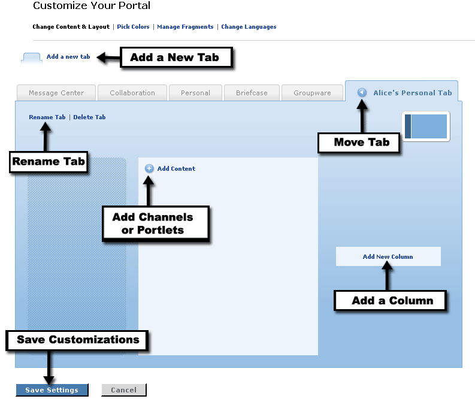

|
An individual's personal tabs are places where each user can set up and group channels for their own use. The user is then responsible for the layout and channels contained within their new tab. |
|
Before you can begin grouping and placing channels in a tab, you need to create the tab. Start by clicking on the Customize link at the top of the screen to enter Preferences Mode. This link may be identified as Preferences for some institutions. Then follow these instructions: |
Creating a New Tab
|
